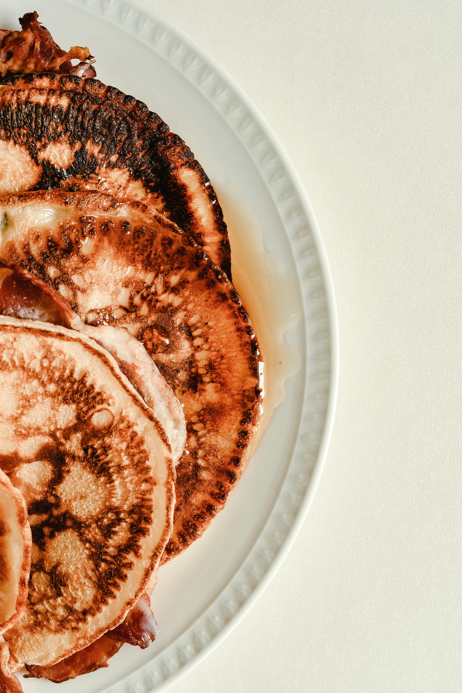

Vajamineva nimekiri:
Egassiis midagi, asume asja juurde.
1. Löö munad kaussi lahti
2. Lisada sool ja suhkur
3. Segada
4. Väikene kogus piima lisada
5. Vaheldumisi hakata lisama jahu ja piima
6. Või sulatada, lasta veidi jahtuda, lisada taignale, segada
7. Jätta taigen umbes pooleks tunniks seisma
8. Hakata pannil küpsetama kuniks taignat piisab.
Ja ongi valminud maitsvad pannkoogid, millele võib lisada nii soolast kui ka magusat!
